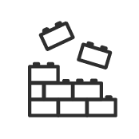

Voorwoord
Op dit moment is Figma de meest gebruikte tool voor prototyping en UI design. In het hergebruiken van componenten en het gebruik maken van design systems loopt Figma op dit moment op kop. Om deze reden wilde ik graag zelf een design system leren maken om beter te begrijpen hoe dit in elkaar zit en hoe je hier het beste mee kan werken. Dit is een relevante skill voor later in het werkveld.